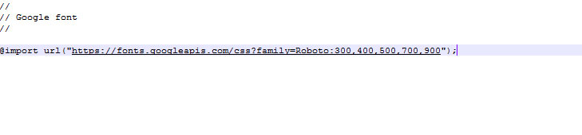
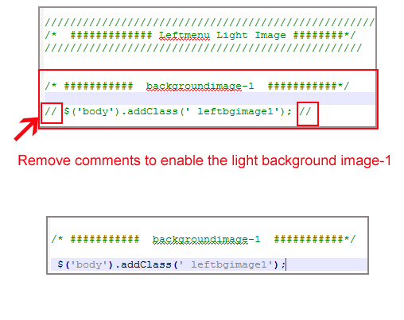
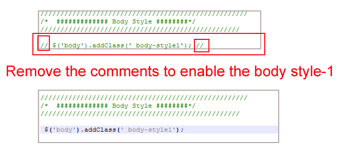
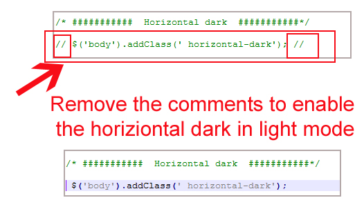
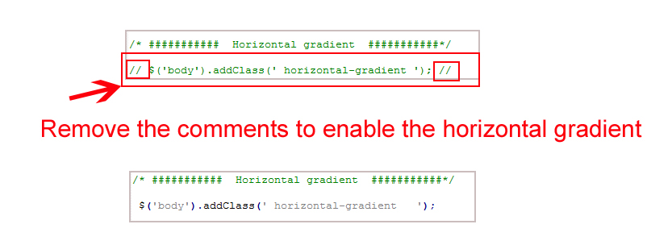

Main-Template
Valex - Premium dashboard ui bootstrap rwd admin html5 template, With these template formats, it's very easy to create a presence and grab someone's attention around the web page Because the template is built using HTML5, CSS3, Bootstrap 4 framework and with Sass. So please before you start working with the template take a quick look on the documentation so that you can easily built your website.
If You Love Our Template Design Please don't forgot to rate it. Thank you so much! 😊
Thank you for purchasing our admin template. Feel free to contact us any time. We have a dedicated team to provide you the best support. If you want any queries please contact live chat or email : sprukotechnologies@gmail.com
If You Love Our Template Design Please don't forgot to rate it. Thank you so much!
VALEX– is a modern, and creative admin template using modern and minimal design. It is fully flexible user-friendly and responsive. This Template Includes 92 HTML Pages & 70+ Plugins and it also includes Horizontal & Vertical-Menu Versions. Different Styles of Widgets etc. This template is “User Friendly” and it is designed in such a way that you can easily understand the code and can modify the template. The template contains Advanced Form-Elements like Date pickers,select2,multi-select,file uploads,color-picker etc are included. This template is 100% Premium Admin Templates. This template is designed using Bootstrap 4 framework, HTML5, CSS3, Jquery.
It is easy to customize CSS & HTML, easy to create any type of Admin Template. It has beautiful index Page and useful inner pages, and all the important sections required by any Admin Template. It is also available more widgets and Advanced Form Elements etc..
It’s fully responsive layout for all types of devices. It work’s on all major web browsers, Desktop, iPhone, iPad, Tablet and all other smart devices.
Once you Purchase VALEX – Premium dashboard ui bootstrap rwd admin html5 template, you will be able to get free download of all future updates.
If You are Not using Scss & gulp No need to install It.You can directly use css files.
VALEX– comes with the power of SCSS. The CSS files can be generated from SCSS by simply follow the below steps::
Please follow the below steps to install and setup all prerequisites:
Make sure to have the Node.js installed & running in your computer. If you already have installed nodejs on your computer, you can skip this step, otherwise install nodejs on your computer,
npm install from the base of your project to install all the necessary dependencies.Gulp is a JavaScipt streaming task runner. It automates many development tasks. Using gulp you can perform tasks like running a local server, minifying code, compilation, Browser sync, optimizing images, etc... We are using gulp which allows us to easily compilation of scss to css. You can read it more about it here.
Make sure to have the Gulp installed & running on your computer. If you already have installed gulp on your computer, you can skip this step. To install gulp follow the below steps
npm install -g gulp from your terminal.npm install --global gulp-clinpm install --save-dev gulpOpen your terminal, go to your folder and enter the command npm install. This would install all the required dependencies in the node_modules folder. After you finished with the above steps, you can run the command to compile scss into css: gulp
| Command | Description |
|---|---|
gulp
|
Runs the project locally, starts the development server and watches for any changes in your code, including your html, javascript, sass, etc. The development server is accessible at http://localhost:3000. |
gulp watch
|
In this template gulp watch command is used When any changes to the source file scss folder i.e (.scss) is made, the watch will run an appropriate task.
All the CSS files under assets/css/ folder will be watched and upon changes made to these files, the styles task will be executed.
|
gulp watch-rtl
|
In this template gulp watch-rtl command is used When any changes to the source file scss-rtl folder i.e (.scss) is made, the watch will run an appropriate task.
All the CSS files under assets/css-rtl/ folder will be watched and upon changes made to these files, the styles task will be executed.
|
gulp dark
|
In this template gulp dark command is for the changes is made in style-dark.scss file in css folder. style-dark.scss will be watched and what ever changes has made in style-dark.scss file it automatically updated in style-dark.css file in css folder.
|
gulp dark-rtl
|
In this template gulp dark-rtl command is for the changes is made in style-dark.scss file in css-rtl folder. style-dark.scss will be watched and what ever changes has made in style-dark.scss file it automatically updated in style-dark.css file in css-rtl folder.
|
gulp menu
|
In this template gulp menu command is for the changes is made in sidemenu.scss file in css folder. sidemenu.scss will be watched and what ever changes has made in sidemenu.scss file it automatically updated in sidemenu.css file in css folder.
|
gulp menu-rtl
|
In this template gulp menu-rtl command is for the changes is made in sidemenu.scss file in css-rtl folder. sidemenu.scss will be watched and what ever changes has made in sidemenu.scss file it automatically updated in sidemenu.css file in css-rtl folder.
|
gulp skin
|
In this template gulp skin command is for the changes is made in skin-modes.scss file in css folder. skin-modes.scss will be watched and what ever changes has made in skin-modes.scss file it automatically updated in skin-modes.css file in css folder.
|
gulp skin-rtl
|
In this template gulp skin-rtl command is for the changes is made in skin-modes.scss file in css-rtl folder. skin-modes.scss will be watched and what ever changes has made in skin-modes.scss file it automatically updated in skin-modes.css file in css-rtl folder.
|
gulp boxed
|
In this template gulp boxed command is for the changes is made in boxed.scss file in css folder. boxed.scss will be watched and what ever changes has made in boxed.scss file it automatically updated in boxed.css file in css folder.
|
gulp boxed-rtl
|
In this template gulp boxed-rtl command is for the changes is made in boxed.scss file in css-rtl folder. boxed.scss will be watched and what ever changes has made in boxed.scss file it automatically updated in boxed.css file in css-rtl folder.
|
gulp dark-boxed
|
In this template gulp dark-boxed command is for the changes is made in dark-boxed.scss file in css folder. dark-boxed.scss will be watched and what ever changes has made in dark-boxed.scss file it automatically updated in dark-boxed.css file in css folder.
|
gulp dark-boxed-rtl
|
In this template gulp dark-boxed-rtl command is for the changes is made in dark-boxed.scss file in css-rtl folder. dark-boxed.scss will be watched and what ever changes has made in dark-boxed.scss file it automatically updated in dark-boxed.css file in css-rtl folder.
|
gulp closed-menu
|
In this template gulp closed-menu command is for the changes is made in closed-sidemenu.scss file in css folder. closed-sidemenu.scss will be watched and what ever changes has made in closed-sidemenu.scss file it automatically updated in closed-sidemenu.css file in css folder.
|
gulp closed-menu-rtl
|
In this template gulp closed-menu-rtl command is for the changes is made in closed-sidemenu.scss file in css-rtl folder. closed-sidemenu.scss will be watched and what ever changes has made in closed-sidemenu.scss file it automatically updated in closed-sidemenu.css file in css-rtl folder.
|
gulp menu-text
|
In this template gulp menu-text command is for the changes is made in sidemenu1.scss file in css folder. sidemenu1.scss will be watched and what ever changes has made in sidemenu1.scss file it automatically updated in sidemenu1.css file in css folder.
|
gulp menu-text-rtl
|
In this template gulp menu-text-rtl command is for the changes is made in sidemenu1.scss file in css-rtl folder. sidemenu1.scss will be watched and what ever changes has made in sidemenu1.scss file it automatically updated in sidemenu1.css file in css-rtl folder.
|
gulp menu-hover
|
In this template gulp menu-hover command is for the changes is made in sidemenu3.scss file in css folder. sidemenu3.scss will be watched and what ever changes has made in sidemenu3.scss file it automatically updated in sidemenu3.css file in css folder.
|
gulp menu-hover-rtl
|
In this template gulp menu-hover-rtl command is for the changes is made in sidemenu3.scss file in css-rtl folder. sidemenu3.scss will be watched and what ever changes has made in sidemenu3.scss file it automatically updated in sidemenu3.css file in css-rtl folder.
|
gulp menu-hover1
|
In this template gulp menu-hover1 command is for the changes is made in sidemenu4.scss file in css folder. sidemenu4.scss will be watched and what ever changes has made in sidemenu4.scss file it automatically updated in sidemenu4.css file in css folder.
|
gulp menu-hover1-rtl
|
In this template gulp menu-hover1-rtl command is for the changes is made in sidemenu4.scss file in css-rtl folder. sidemenu4.scss will be watched and what ever changes has made in sidemenu4.scss file it automatically updated in sidemenu4.css file in css-rtl folder.
|
gulp toggle-menu
|
In this template gulp toggle-menu command is for the changes is made in sidemenu-responsive-tabs.scss file in css folder. sidemenu-responsive-tabs.scss will be watched and what ever changes has made in sidemenu-responsive-tabs.scss file it automatically updated in sidemenu-responsive-tabs.css file in css folder.
|
gulp toggle-menu-rtl
|
In this template gulp toggle-menu-rtl command is for the changes is made in sidemenu-responsive-tabs.scss file in css-rtl folder. sidemenu-responsive-tabs.scss will be watched and what ever changes has made in sidemenu-responsive-tabs.scss file it automatically updated in sidemenu-responsive-tabs.css file in css-rtl folder.
|
gulp beautify
|
In this template gulp beautify command is for it beautifys all .css files in css folder
|
gulp beautify-rtl
|
In this template gulp beautify-rtl command is for it beautifys all .css files in css-rtl folder
|
HTML/ ├── assets ├── css ├── css-rtl ├── img ├── js ├── plugins ├── scss ├── scss-rtl ├── HTML-LTR ├── Horizontal-Dark ├── Horizontal-Dark-Boxed ├── Horizontal-Dark-Centerlogo ├── Horizontal-Dark-Centerlogo-Boxed ├── Horizontal-Light ├── Horizontal-Light-Boxed ├── Horizontal-Light-Centerlogo ├── Horizontal-Light-Centerlogo-Boxed ├── Leftmenu-Closed-Dark-Sidebar ├── Leftmenu-Closed-Dark-Sidebar-Boxed ├── Leftmenu-Closed-Light-Sidebar ├── Leftmenu-Closed-Light-Sidebar-Boxed ├── Leftmenu-hoversubmenu-Dark-Sidebar ├── Leftmenu-hoversubmenu-Dark-Sidebar-Boxed ├── Leftmenu-hoversubmenu-Light-Sidebar ├── Leftmenu-hoversubmenu-Light-Sidebar-Boxed ├── Leftmenu-hoversubmenu-style1-Dark-Sidebar ├── Leftmenu-hoversubmenu-style1-Dark-Sidebar-Boxed ├── Leftmenu-hoversubmenu-style1-Light-Sidebar ├── Leftmenu-hoversubmenu-style1-Light-Sidebar-Boxed ├── Leftmenu-Icon-Dark-Sidebar ├── Leftmenu-Icon-Dark-Sidebar-Boxed ├── Leftmenu-Icon-Light-Sidebar ├── Leftmenu-Icon-Light-Sidebar-Boxed ├── Leftmenu-Iconoverlay-Dark-Sidebar ├── Leftmenu-Iconoverlay-Dark-Sidebar-Boxed ├── Leftmenu-Iconoverlay-Light-Sidebar ├── Leftmenu-Iconoverlay-Light-Sidebar-Boxed ├── Leftmenu-Icontext-Dark-sidebar ├── Leftmenu-Icontext-Dark-sidebar-Boxed ├── Leftmenu-Icontext-Light-sidebar ├── Leftmenu-Icontext-Light-sidebar-Boxed ├── Leftmenu-Toggle-Dark-Sidebar ├── Leftmenu-Toggle-Dark-Sidebar-Boxed ├── Leftmenu-Toggle-Light-Sidebar ├── Leftmenu-Toggle-Light-Sidebar-Boxed ├── HTML-RTL ├── Horizontal-Dark ├── Horizontal-Dark-Boxed ├── Horizontal-Dark-Centerlogo ├── Horizontal-Dark-Centerlogo-Boxed ├── Horizontal-Light ├── Horizontal-Light-Boxed ├── Horizontal-Light-Centerlogo ├── Horizontal-Light-Centerlogo-Boxed ├── Sidemenu-Closed-Dark ├── Sidemenu-Closed-Dark-Boxed ├── Sidemenu-Closed-Light ├── Sidemenu-Closed-Light-Boxed ├── Sidemenu-hoversubmenu-Dark ├── Sidemenu-hoversubmenu-Dark-Boxed ├── Sidemenu-hoversubmenu-Light ├── Sidemenu-hoversubmenu-Light-Boxed ├── Sidemenu-hoversubmenu-style1-Dark ├── Sidemenu-hoversubmenu-style1-Dark-Boxed ├── Sidemenu-hoversubmenu-style1-Light ├── Sidemenu-hoversubmenu-style1-Light-Boxed ├── Sidemenu-Icon-Dark ├── Sidemenu-Icon-Dark-Boxed ├── Sidemenu-Icon-Light ├── Sidemenu-Icon-Light-Boxed ├── Sidemenu-Iconoverlay-Dark ├── Sidemenu-Iconoverlay-Dark-Boxed ├── Sidemenu-Iconoverlay-Light ├── Sidemenu-Iconoverlay-Light-Boxed ├── Sidemenu-Icontext-Dark ├── Sidemenu-Icontext-Dark-Boxed ├── Sidemenu-Icontext-Light ├── Sidemenu-Icontext-Light-Boxed ├── Toggle-Dark-Sidemenu ├── Toggle-Dark-Sidemenu-Boxed ├── Toggle-Light-Sidemenu ├── Toggle-Light-Sidemenu-Boxed
If you need to add another CSS .you should place CSS Link in Header Section Only
style.css is the main CSS file located in the assets/css/ folder of the package. The whole CSS file is well-indexed with the topic and its related code. and all Scss files are imported in style.css
Below js code is used for theme settings , darkmode ,lightmode and sidebar and horizonatlmenu options.
Go To _fonts.scss (assets/scss/custom/fonts/_fonts.scss )
if you want to change another font-family Go to the site Google Fonts And Slect One font Family and import In to style.css file
Example:

And paste Your Selected font-family in _fonts.scss
Example:

Go To "assets/images/brand" folder and replace your logo with Previous Logos within in image size. note: Please don't increase logo sizes. Replace your logo within given image size. otherwise the logo will not fit in particular place it disturbs the template design.
open custom.js file go to skins section.. and remove comments for leftmenu-dark to enable leftmenu dark style as shown in below image

open custom.js file go to skins section.. and remove comments for leftmenu-color to enable leftmenu color style as shown in below image

open custom.js file go to skins section.. and remove comments for leftmenu-gradient to enable leftmenu gradient style as shown in below image

open custom.js file go to skins section.. and remove comments for leftbgimage1 to enable leftbgimage1 style as shown in below image

Similarly you can enable any Light Leftmenu background image by removing comments from leftbgimage1 to leftbgimage5 .
NOTE: while you are enabling one you must disable remaining leftbgimages
EXample : i choose leftbgimage1 for my template ,i dont want that image i want to change leftbgimage1 to leftbgimage2 . so i enabled leftbgimage2 by removing comments and disabled leftbgimage1 by adding comments as shown below image.
open custom.js file go to skins section.. and remove comments for leftmenu-light to enable leftmenu-light as shown in below image

open custom.js file go to skins section.. and remove comments for body-style1 to enable body-style1 as shown in below image

open custom.js file go to skins section.. and remove comments for horizontal-light to enable horizontal-light as shown in below image

open custom.js file go to skins section.. and remove comments for horizontal-color to enable horizontal-color as shown in below image

open custom.js file go to skins section.. and remove comments for horizontal-dark to enable horizontal-dark as shown in below image

open custom.js file go to skins section.. and remove comments for horizontal-gradient to enable horizontal-gradient as shown in below image

open custom.js file go to skins section.. and remove comments for leftmenu-light and remove the commets for your choosen image as shown in below image
Similarly you can enable Leftmenu-light with any image form leftbgimage1 - leftbgimage5 .
NOTE: while you are enabling one you must disable remaining leftbgimages

open custom.js file go to skins section.. and remove comments for leftmenu-color and remove the commets for your choosen image as shown in below image
Similarly you can enable leftmenu-color with any image form leftbgimage1 - leftbgimage5 .
NOTE: while you are enabling one you must disable remaining leftbgimages

open custom.js file go to skins section.. and remove comments for leftmenu-dark and remove the commets for your choosen image as shown in below image
Similarly you can enable leftmenu-color with any image form leftbgimage1 - leftbgimage5 .
NOTE: while you are enabling one you must disable remaining leftbgimages

open custom.js file go to skins section.. and remove comments for leftmenu-gradient and remove the commets for your choosen image as shown in below image
Similarly you can enable leftmenu-color with any image form leftbgimage1 - leftbgimage5 .
NOTE: while you are enabling one you must disable remaining leftbgimages

In this template we used Material icon You can downlaod and use for your template
Material icon link
https://material.io/resources/icons/?style=twotoneFollow the below step
example
Here i downloaded check_circle svg icon, and I copied the svg code as shown below
class="side-menu__icon"
AFTER
here i delete width and height and added class to svg icon
like that you can download any icon from the given ink and remove the height and width to that svg icon and add class="side-menu__icon" for svg icon
If you had changed HTML file names then you should be given the link in HTML pages
for example : If I changed index.html into index5.html
open all HTML pages and change the link index.html to index5.html as shown below
or if you want to add new page example: xyz.html this xyz.html link should be given in all left menu and left menu dark HTML pages
and that link you want to place in elements section then go to near
and goto the links and add this xyz.html link in
elements section as shown below
for every tab, we had given name related to that tab so that you can easily find out section , and go to that particular section and add your new link
for example:for ecommerce :
for apps :
for advanced :
Here we are used 10 types of icons in dashtic
| Font Awesome | https://fontawesome.com/ |
| Material Design Icons | https://materialdesignicons.com/ |
| Simple line Icons | https://simplelineicons.github.io/ |
| Feather Icons | https://feathericons.com/ |
| Ionic Icons | https://ionicons.com/ |
| pe7 Icons | https://themes-pixeden.com/font-demos/7-stroke/ |
| Themify Icons | https://themify.me/themify-icons |
| Typicons Icons | https://iconify.design/icon-sets/typcn/ |
| Weather Icons | https://erikflowers.github.io/weather-icons/ |
| Material Icons | https://material.io/resources/icons/ |
Here We are used 7 types of charts
| Chartjs Charts | https://www.chartjs.org/ |
| Morris Charts | https://morrisjs.github.io/morris.js/ |
| Apex Charts | https://apexcharts.com/ |
| Pie Charts | http://benpickles.github.io/peity/ |
| Echart Charts | https://echarts.apache.org/examples/en/ |
| Flot Charts | http://www.flotcharts.org/flot/examples/ |
| C3 Charts | https://c3js.org/ |
Google fonts are used in the template. They are as follows: Google Fonts
All Images are used: Pexels.com